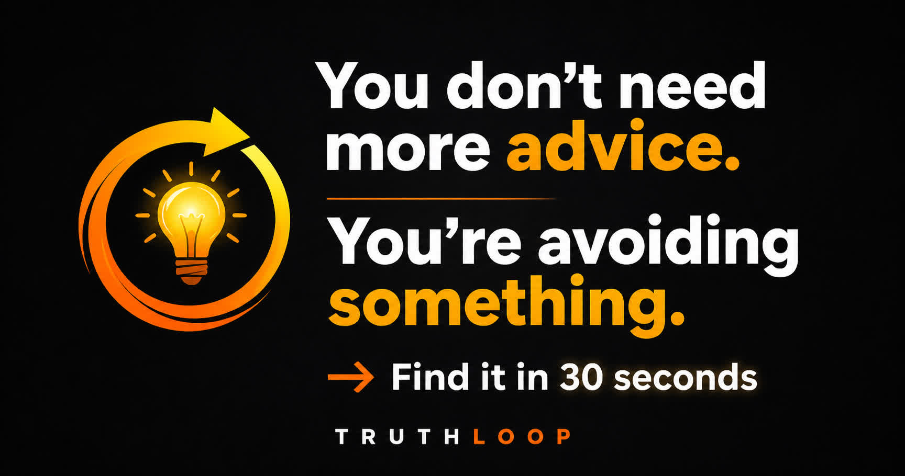

One of the most frustrating experiences is knowing exactly what needs to be done and still not doing it. You know you should publish content, finish the project, start exercising, make the call, launch the business, or have the difficult conversation. The information is already there. The plan is already clear. Yet something keeps stopping you from moving forward.
Most people assume this means they are lazy, unmotivated, or lacking discipline. In reality, the problem is usually deeper. The gap between knowing and doing is often created by hidden behavioral patterns rather than a lack of knowledge. Many people spend years searching for new strategies when the real obstacle is emotional resistance, hesitation loops, or self-protection mechanisms that quietly operate beneath awareness.
Behavioral patterns often hide behind reasonable explanations. Instead of taking action, people research more, optimize their systems, wait for perfect conditions, seek additional certainty, or convince themselves they need more preparation. These actions feel productive, which makes them difficult to detect. The person feels busy but remains in the same position.
This is where hesitation loops appear. A hesitation loop happens when the mind creates small delays that reduce emotional discomfort. The action itself is usually not the real problem. The emotional consequence attached to the action is. Fear of failure, fear of judgment, fear of uncertainty, fear of making the wrong decision, or fear of visible results can all create resistance. The mind protects itself by delaying action while creating the illusion of progress.
Execution resistance is rarely logical. People often know exactly what they should do but feel unable to do it consistently. This happens because human behavior is driven by more than conscious decisions. Emotional patterns, hidden contradictions, self-protection behaviors, and avoidance strategies influence actions long before logic becomes involved.
For example, a creator may say they want growth but avoid publishing controversial ideas. A founder may want customers but delay launching. A student may want results but continuously prepare without testing themselves. The visible goal and the hidden emotional goal start fighting each other. One part wants progress while another part wants safety. The result is clarity collapse. The person understands the solution but struggles to execute it.
TruthLoop AI was created to explore these hidden behavioral patterns. Instead of giving motivation, productivity hacks, or generic advice, the system looks for hesitation loops, emotional resistance, contradictions, avoidance behaviors, and repeated decision patterns hidden inside the user's own language.
As conversations progress through the TruthLoop process, the focus shifts from surface problems to deeper behavioral signals. Many users discover that their real challenge is not a lack of information. It is the emotional pattern that keeps blocking action. Once the hidden pattern becomes visible, the behavior often becomes easier to understand and change.
Most people already know what they should do. The real question is: What keeps stopping them from doing it?
Use TruthLoop AI to uncover hesitation loops, emotional resistance, hidden contradictions, and behavioral patterns behind your actions.
Open TruthLoop AI →Because the obstacle is often emotional resistance rather than missing information. Hidden fears and hesitation loops can block action.
Not always. Many people understand the solution but struggle because of behavioral patterns and self-protection mechanisms.
Yes. Overthinking often becomes a delay strategy that creates the feeling of progress while avoiding real execution.
TruthLoop explores behavioral patterns, emotional resistance, hesitation loops, and contradictions hidden within conversations.